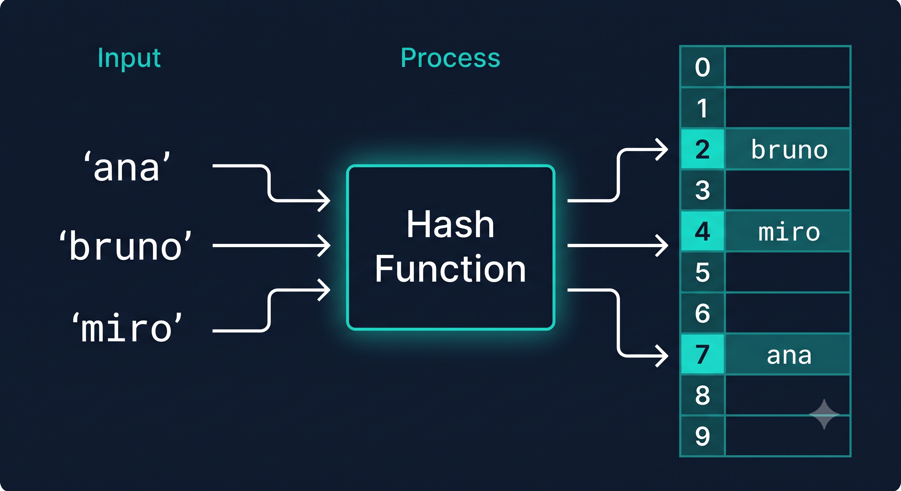

Big-O · Hash Tables · dict / set · hashlib · JSON · .ini · env vars
UC00606 · Linguagem Estruturada · Aula 9
Como encontramos "miro" numa lista com 1 000 000 entradas?
utilizadores = ["ana", "bruno", "carlos", ..., "miro", ...]
# ↑ ↑
# posição 0 posição ???
# Só há uma forma: verificar um por um
for u in utilizadores:
if u == "miro":
return True # mas onde está?Será que conseguimos fazer melhor?
Quando os dados crescem, como cresce o trabalho?
Big-O descreve como o custo escala com n — não quanto demora exatamente.
| Notação | Nome | 10 elem. | 1 000 elem. | 1 000 000 elem. |
|---|---|---|---|---|
| O(1) | Constante | 1 | 1 | 1 |
| O(log n) | Logarítmico | ~3 | ~10 | ~20 |
| O(n) | Linear | 10 | 1 000 | 1 000 000 |
| O(n²) | Quadrático | 100 | 1 000 000 | 10¹² |
Ideia: transformar a chave diretamente num índice
Lista normal:
# Temos de procurar um por um
"ana" → posição ???
"bruno" → posição ???
"miro" → posição ???
# O(n)Com hash function:
# Calculamos diretamente onde está
"ana" → hash → posição 2
"bruno" → hash → posição 7
"miro" → hash → posição 4
# O(1) em média!
Só para perceber o mecanismo — nunca usar em produção!
def hash_simples(texto):
soma = 0
for letra in texto:
soma += ord(letra) # valor numérico da letra
return soma % 10 # posição entre 0 e 9
# Testar:
print(hash_simples("ana")) # → ?
print(hash_simples("bruno")) # → ?
print(hash_simples("miro")) # → ?Para pesquisar "miro" → calculamos hash_simples("miro") → posição 4 → acesso direto → O(1)
É esperado e normal — a implementação tem de saber lidar
print(hash_simples("abc")) # soma: 97+98+99 = 294 → 294 % 10 = 4
print(hash_simples("acb")) # soma: 97+99+98 = 294 → 294 % 10 = 4
# "abc" != "acb" MAS hash("abc") == hash("acb")
# Ambos querem a posição 4 → COLISÃOCom uma boa hash function, as listas ficam curtas → O(1) em média.
Com uma função má (tudo no mesmo bucket) → pode degradar até O(n).
dict e set — hash tables em PythonJá usaste hash tables — só não sabias o nome
dict — Hash Map (chave → valor)
notas = {
"Ana": 17,
"Bruno": 14,
"Miro": 18,
}
# O(1) — acesso direto por chave
print(notas["Miro"]) # 18
"Ana" in notas # True — O(1)
notas["Diana"] = 16 # inserção — O(1)set — Hash Set (pertença)
bloqueados = {"ana", "hacker99", "root"}
# O(1) — verificar pertença
"ana" in bloqueados # True
"miro" in bloqueados # False
# vs lista O(n):
["ana", "hacker99", "root"].count("ana")dict ou set, nunca uma lista.hash() vs hashlib — são coisas diferentesMesmo nome, objetivos completamente distintos
hash() — uso interno do Python
hash("Ana") # algum inteiro
hash("Bruno") # outro inteiro
# Usado internamente por dict e set
# NÃO usar para segurança!
# O valor pode mudar entre execuçõeshash()
hashlib — hashing criptográfico
import hashlib
texto = "Olá mundo"
digest = hashlib.sha256(
texto.encode()
).hexdigest()
print(digest)
# a591a6d40bf420404a011733...
# Sempre o mesmo resultado
# para o mesmo inputUma pequena mudança → digest completamente diferente
import hashlib
def sha256(texto):
return hashlib.sha256(texto.encode()).hexdigest()
print(sha256("ola"))
# → fcde2b2edba56bf408601fb721fe9b5c338d10ee429ea04fae5511b68fbf8fb9
print(sha256("Ola")) # só mudou a capitalização!
# → 20da5dc9b0f5b98cd9a61836b0b5ba78e3bb81d3b0af3b5c79cc9b5b68c5965
print(sha256("ola!")) # um único caráter a mais
# → 9c56cc51b374c3ba189210d5b6d4bf57790d351ef8d10ec232cfdd69b5be4a0Contexto de cibersegurança — distinção crítica
# ❌ Errado — nunca fazer isto para guardar passwords:
password_guardada = hashlib.sha256("minhapassword".encode()).hexdigest()
# Problema: SHA-256 é extremamente RÁPIDO
# Um atacante testa milhões de passwords por segundo
# com GPUs modernasPython tem hashlib.pbkdf2_hmac() para passwords — mas na prática usa-se a biblioteca bcrypt
O formato universal de troca de dados na web
Ficheiro agentes.json
[
{
"id": 1,
"codename": "FALCON",
"nivel": 3,
"ativo": true
},
{
"id": 2,
"codename": "VIPER",
"nivel": 5,
"ativo": false
}
]Equivalência Python
# JSON → Python
object → dict
array → list
string → str
number → int / float
true → True
false → False
null → None
# Parsing = transformar
# texto JSON em objetos Pythonjson — 4 funções essenciaisload/loads para ler · dump/dumps para escrever
import json
# LER de ficheiro → Python
with open("agentes.json", "r", encoding="utf-8") as f:
agentes = json.load(f) # ficheiro → lista/dict Python
# LER de string → Python
texto = '{"codename": "FALCON", "nivel": 3}'
agente = json.loads(texto) # string → dict Python
# ESCREVER Python → ficheiro
with open("agentes.json", "w", encoding="utf-8") as f:
json.dump(agentes, f, indent=2, ensure_ascii=False)
# ESCREVER Python → string
texto_json = json.dumps(agentes, indent=2, ensure_ascii=False)| Função | Recebe | Retorna |
|---|---|---|
json.load(f) | file object | dict / list Python |
json.loads(s) | string | dict / list Python |
json.dump(obj, f) | Python + file | escreve no ficheiro |
json.dumps(obj) | Python | string JSON |
.ini e variáveis de ambienteCódigo, configuração e segredos devem estar separados
config.ini
[simulador]
versao = 1.0
max_agentes = 50
ficheiro_dados = agentes.json
[logs]
nivel = INFO
ficheiro = sistema.logimport configparser
cfg = configparser.ConfigParser()
cfg.read("config.ini")
versao = cfg["simulador"]["versao"]
max_ag = cfg["simulador"].getint("max_agentes")Variáveis de ambiente
import os
# Ler variável de ambiente
api_key = os.getenv("API_KEY")
db_host = os.getenv("DB_HOST", "localhost")
# ↑ valor por omissão
# ❌ Nunca fazer:
API_KEY = "s3cr3t_k3y_123" # fica no código!
# ✅ Correto:
API_KEY = os.getenv("API_KEY") # fica no ambienteTudo o que aprendemos aplicado ao projeto
"""
Ficheiro: simulador.py | UC: UC00606 | Aula: 9
"""
import json, configparser, hashlib, os
# 1. Ler configuração
cfg = configparser.ConfigParser()
cfg.read("config.ini")
FICHEIRO = cfg["simulador"]["ficheiro_dados"]
# 2. Carregar agentes do JSON
def carregar():
try:
with open(FICHEIRO, "r", encoding="utf-8") as f:
return json.load(f)
except FileNotFoundError:
return []
# 3. Guardar com hash de integridade
def guardar(agentes):
with open(FICHEIRO, "w", encoding="utf-8") as f:
json.dump(agentes, f, indent=2, ensure_ascii=False)
conteudo = json.dumps(agentes, ensure_ascii=False)
print("✅ Guardado | SHA-256:", hashlib.sha256(conteudo.encode()).hexdigest()[:16], "...")dict e set são hash tables
hashlib.sha256 para integridadeconfigparser para .inios.getenv() para segredos e ambientes
UC00606 · Aula 9 · makercraft.pt/UC00606